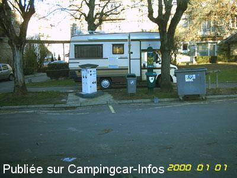

AS = Aire de services uniquement de :
LISIEUX
(N° 813)
Accès/adresse :
Rue d'Alençon
14100 LISIEUX
14100 LISIEUX
Latitude : (Nord) 49.1426° Décimaux ou 49° 8′ 33′′
Longitude : (Est) 0.2276° Décimaux ou 0° 13′ 39′′
Tarif : 2011
100 Litres d'eau ou 1 H d'électricité : 2,80 €
Type de borne : EURO-RELAIS
Services :


Tous commerces
Autres informations :
Tel Office du Tourisme : +33(0)231 481 810
http://www.lisieux-tourisme.com

Le 24/02/2004 par Globi86
de
PH 14
le 02/10/2015 :
Il s'agit juste d'une aire de service.
Il s'agit juste d'une aire de service.
de
PC
le 26/01/2014 :
Stayed for lunch and a visit to the Basilica in September 2013. Too noisy for us to stay overnight as it is directly next to a main road - but for the heavier sleeper no problem! Evidently you would be allowed one nights stay only by the authorities.
Stayed for lunch and a visit to the Basilica in September 2013. Too noisy for us to stay overnight as it is directly next to a main road - but for the heavier sleeper no problem! Evidently you would be allowed one nights stay only by the authorities.
de
JEAN MARIE
le 19/06/2011 :
Lisieux: 2 étoiles sur le guide Michelin.
Peut-être pour le pélérinage, TRES excessif pour la visite!
Nous avons dormi à Moyaux. Au milieu des pommiers. Site et région plaisants.
Lisieux: 2 étoiles sur le guide Michelin.
Peut-être pour le pélérinage, TRES excessif pour la visite!
Nous avons dormi à Moyaux. Au milieu des pommiers. Site et région plaisants.
de
Rapido 65
le 08/11/2008 :
Accueil très chaleureux à l'office de tourisme, personnel compétent et serviable. Le terme d'aire est à mon sens inapproprié car il s'agit du vaste parking auto proche de l'office de tourisme, difficile d'accès pour les camping-cars. La voie de cirulation intérieure du parking est sinueuse avec présence d'arbres. La borne est située à l'entrée du parking, facile d'accès si elle n'est pas prise par un véhicule qui stationne dessus.
Accueil très chaleureux à l'office de tourisme, personnel compétent et serviable. Le terme d'aire est à mon sens inapproprié car il s'agit du vaste parking auto proche de l'office de tourisme, difficile d'accès pour les camping-cars. La voie de cirulation intérieure du parking est sinueuse avec présence d'arbres. La borne est située à l'entrée du parking, facile d'accès si elle n'est pas prise par un véhicule qui stationne dessus.